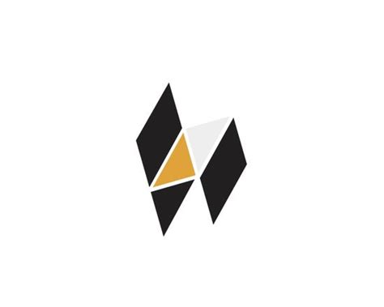

Hack:

Não isso daqui não é linguagem de programação para hackear, na verdade essa linguagem que foi criada pelo facebook (Atualmente pertence a Meta), baseado em PHP, mas adiciona uma tipagem estática opcional e recursos modernos, ela pode ser usada para desenvolvimento web, aplicações corporativas, benefícios da tipagem estática
e compatibilidade com PHP e bem ela é usada em infraestruturas web interna por parte do facebook/meta, web backend de alto desempenho, projetos que precisam combinar com PHP = tipagem estática.